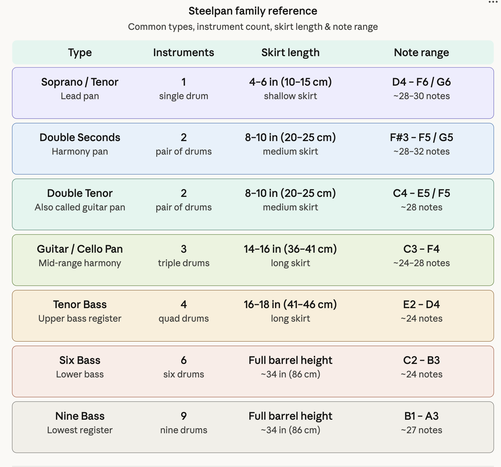
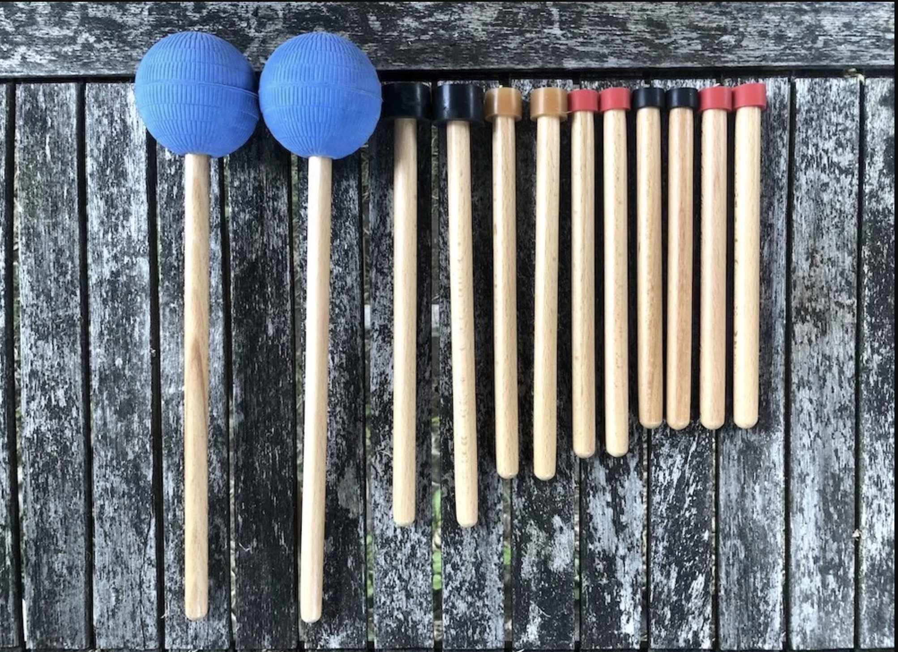

Tuning the Pan
A standard 55-gallon oil drum usually measures approximately 23–24.5 inches in diameter and 33–35 inches in height. In making steel, higher the gauge, the thinner the metal. The best drums for steelpan-making are usually 18-gauge or 1.2mm.
This gauge is important because it offers:
- Optimal Thickness for Tuning: It allows for proper sinking and note shaping. If the steel is too thin, it may not hold the pitch; if it is too thick (like a 16-gauge), it can be too rigid to tune.
- Optimal Resonance and Sound: A 1.2 mm surface provides the right density to produce rich, resonant overtones rather than dull sounds, which is crucial for high-quality instruments.
- Structural Integrity: While 18-gauge is ideal for the playing surface, the sides can be slightly thinner (20-gauge or 1.0 mm) to reduce the overall weight, but the bottom should not be less than 1.2 mm for the best performance.
- Durability: The drums must withstand significant hammering, heat treatment, and tension from the tuned notes, which the sturdy 18-gauge steel provides.
Convex vs Concave
 Initially, players pounded their pans from the inside out, creating a CONVEX shape.
Initially, players pounded their pans from the inside out, creating a CONVEX shape.
 Ellie Mannette was the first to pound the metal from the outside in, creating the CONCAVE steelpan shape that we know today. This concave design allowed for more notes to be placed on the playing surface, and produced better sound isolation between notes.
Ellie Mannette was the first to pound the metal from the outside in, creating the CONCAVE steelpan shape that we know today. This concave design allowed for more notes to be placed on the playing surface, and produced better sound isolation between notes.
Mannette and his Invaders Steelband debuted these new-style pans in 1947 during the second Carnival after WW2 ended.
Steps to Building a Steelpan
- Select and Clean the Drum: Start with a 55-gallon drum (typically oil or chemical). Clean the top surface, removing any residual oil, and remove any existing bends on the rim, as they will affect the sound.
- Cut the drum to the desired length: The length of the "skirt" will be determined by the type of pan being made.
- Centre-Punch: Mark the centre of the drum head.
- Fire: Invert and burn the drum using a gas torch or open fire to prepare it for sinking and tuning. Locate the dead-centre of the drum.
- Circle: Mark the centre of the drum head with a circle.
- Sinking: Mark the circle (approx. 18–20cm) and begin the sinking process. Gradually radii 16cm, 20cm, and then trim to complete the sinking process.
- Shaping/Forming the Bowl: Using a sledgehammer or pneumatic press, refine the surface, working in a spiral from the outer circles towards the centre to create a bowl shape (concave). This increases the surface tension.
- Smoothing: Use a medium-weight hammer to smooth out the surface and create a consistent, rounded bowl shape.
- Marking Notes: Outline the layout of the notes on the concave surface. Use chalk to shape the notes and isolate them from one another.
- Grooving: Define the notes by using a nail punch and hammering a groove pattern around them.
- Shaping/Knocking Up: Turn the drum over and hammer the notes cut from the underside to create a convex surface for each note.
Steel drums with a galvanised iron coating cannot be used for steelpans as the coating definitely spoils the tone. The quality and homogeneity of the steel are important. Poor metal may have spots where the carbon content is more concentrated. These spots are harder and may burst when stretched during the sinking.
The condition of the drum is also very important. A little rust here and there on the surface doesn't matter, but some drums have sharp dents and spots of rust that seem to go deep into the metal. These spots tend to crack when the metal is stretched during the sinking, destroying the pan.
Some drums are "re-conditioned", which means that they are cleaned and used a second time. The drum is often burned clean during the reconditioning process and this affects the metal in an unfavourable way. Try to avoid these drums. Re-conditioned drums can be detected by scraping off the paint at a spot and looking at the metal surface. If the metal is clear and shiny, it is a new drum. If it is grainy and without lustre, it is re-conditioned.
Tools Required
- For cutting the drum: an electric jigsaw or old cutlass and hammer
- For sinking the drum: gloves, a marker, a compass, a 2.5 to 3kg hammer and earmuffs.
- For marking the notes: flexible ruler and pen/marker.
- For tuning: A large tuning hammer, a plastic tuning hammer, a pan mallet, a good musical ear and an electronic tuning device.
- For backing and grooving: Metal Punch, backing sledgehammer, and a smoothing hammer with a plastic head.
The skirt is the cylindrical barrel section below the concave playing surface — the deeper the skirt, the longer the vibrating column of air, which produces lower pitches.
That's why the bass pans use full 55-gallon oil drum barrels while the soprano is just a shallow dish.


Concert Pitch: A440
Like all other musical instruments, steelpans are tuned to the international tuning standard of A440 — meaning the note A above middle C is tuned to exactly 440 Hz (vibrations per second).
This was formally adopted by the International Organization for Standardization (ISO) in 1955 and reaffirmed in 1975 as ISO 16.
Why A440?
The short answer is that it ensures consistency across orchestras and electronic instruments.
Before standardization, pitch varied wildly by country, era, and even by orchestra. Baroque-era instruments often tuned to A415 (roughly a semitone lower). By the 19th century, orchestras were creeping higher — some tuning to A452 or beyond — because higher pitch gave strings a brighter, more brilliant sound.
This caused real problems: singers strained their voices, wind instruments built in one country couldn't play in tune with those from another, and touring musicians faced constant mismatches.
A440 was chosen because it sat comfortably in the middle of the historical range, was physiologically manageable for singers, and was technically convenient — 440 is a clean number that relates simply to other standard frequencies (220 Hz is the A below, 880 Hz is the A above).
BUT not everyone follows it strictly. Many European orchestras, particularly in Germany and Austria, tune slightly higher — often to A442 or A443 — because it produces a brighter, more penetrating sound in large concert halls. Some period-instrument ensembles deliberately tune to historical standards like A415 for authentic Baroque performance.
For steelpans specifically, tuning to A440 is the modern standard, though early pan tuners worked by ear before standardization reached the instrument.
Steelpan Sticks

Pan sticks are made from 12mm diameter wooden dowels cut to a specific length. A latex rubber tubing is placed at one end of each stick. This is the end that strikes the notes when playing the pan. For the bass steelpans, sponge balls are used instead of rubber tubing.
Further Reading
→ Stockholm Steel Band - Choosing the Drum → Caribbean Steel Drums - Making Steel Pans → Wikipedia - SteelpanThink you've mastered this topic?
Test Your Knowledge →